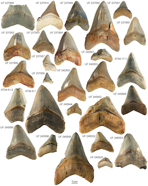

Megalodon used nursery areas for birth. These areas likely had a large mount of food and were on warm, coastal waters. Threats had to be minor, as megalodon pups were particularly vulnerable, measuring in at 11 feet during their smallest infancy size. Other sharks like the great hammerhead shark and the snaggletooth shark likely sought to eat megalodon infants, which is why nursery areas had to be devoid of threats. Their diet shows an ontogenetic shift as they grow. Juvennile megalodon ate fish, giant sea tutrtles, dugongs, and small cetaceans. As they matured, they preferred to eat large cetaceans. The photo on the right shows an array of baby megalodon teeth.